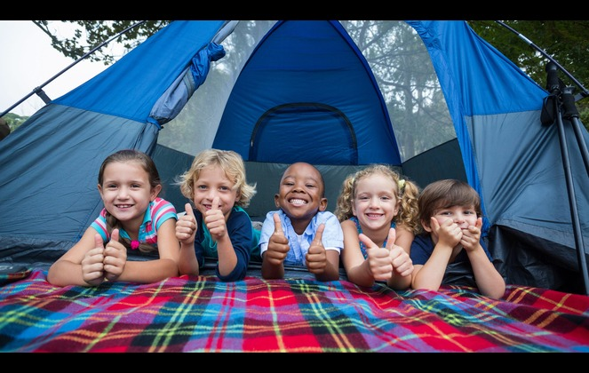

About Us
We have been an company for many years passdown for many generations
This is our 50th aniversary.
Our grounds have many different things to offer
we want our campers to have fun and nice time at our Grounds that will make you want to come back!
In the middle of breathtaking natural beauty, our campsite offers a unique combination of adventure and peace. You can set up your tent and take in the peace of the nature at one of the roomy tent sites tucked away among tall trees and vast pastures. There are plenty of outdoor things to choose from, including stargazing under a bright night sky, hiking beautiful paths, and fishing in neighboring streams. Our well-appointed amenities, which include warm showers, spotless bathrooms, and a pleasant gathering spot where people can mingle by the campfire, guarantee your comfort and convenience. Our campsite is the ideal setting for creating lifelong experiences in the vast outdoors, whether you're looking for rest or heart-pounding adventures.
we have the best Camping grounds in the county
here all the activites that we have to offer
These elements come together to offer everyone who visits us amazing experiences. Our campground provides a haven for people looking to escape the bustle of contemporary life, tucked away in a magnificent forest setting. As you re-establish your connection to nature, settle into your comfortable tent beneath a canopy of old trees and enjoy the soothing sound of chirping birds and rustling leaves.
Explore new areas by traveling along beautiful paths that meander next to bubbling streams, weave through verdant forests, and end in jaw-dropping panoramas. Take advantage of
1.Hiking
2.Kayaking
3.Scavenger hunt
4.Horseback riding
5.Sack races
6.Obsatcle course
7.Fishing
